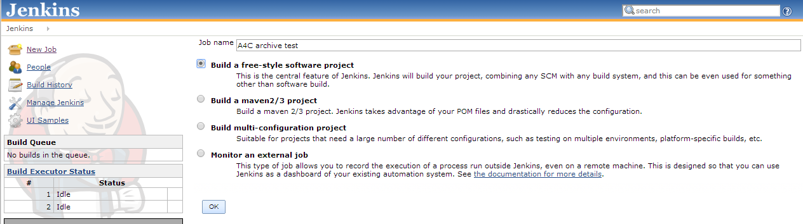
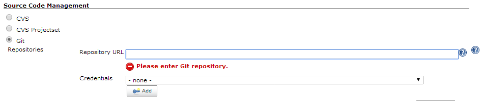

ALIEN 4 Cloud
ALIEN 4 Cloud
Tests with jenkins plugin
We have seen here that we can use the ALIEN REST API to archive tests. Based on it, a jenkins plugin has been developed (and still being improved) to automate all the test routine.
The plugin is written in JAVA language, and can ca lunch a serie of BDD (Behaviour Driven Development) tests with the help of Cucumber framework.
The tests are lunched via configurables Jenkins “FreeStyle” jobs. You can then configure the ALIEN instance on which to perform tests, the cloud, the credential to be used, and also specify whether or not to undeploy the test application before endind the job.
Prerequisites
Prepare your archive
Follow the same instructions as the ones explained here. in addition, add in the “test” folder your cucumbr file (a .feature file). Your archive should look like:
├── Definitions
│ ├── java-types.yaml
│ └── tosca-base-types.yaml
├── images
│ ├── compute.png
│ └── ...
├── test
│ ├── sample-application.yaml
└── tests.feature
└── TOSCA-Metadata
└── ALIEN-META.yamlThe cucumber (.feature) file
In this file, you will have to describe what you whant to test and the way the tests should be proceeded. Currently, we only support a few steps:
Feature: Install Tomcat application and test status
Scenario: I install an application
Given a cloud "cloud" created
When i deploy the test application
Then i have application "deployed" within 10000 millisecondsPackage and Install the plugin
Fist you need to clone the repository and package the plugin to have a .hpi file.
Then install the plugin in your running instance of Jenkins. (For more information, see the Readme file in the plugin repository).
How to test your topology
Archive and location
After preparing the archive, you have to put it at jenkins disposal. For now the solution is to upload the folder content (unzipped) on a git or svn.
For the next steps, you should make sure you have a running instance of Alien 4 Cloud (copy its URL), and a cloud created and activated (note its name)
Jenkins job
-
First you must create a “FreeStyle” job on jenkins.
 -
Configure the job. In the “Source Code Management” section, select your provider and fill in the repository URL where you’ve uploded the content of your archive.
 -
Next, configure the build environment, by checking the option Setup Alien4Cloud test environment. This will set up some variables for the tests. Also optionnaly check the sub-option if you want the job to automatically undeploy the test application at the end.

-
Add a build step. From the lists, Select “ALIEN 4 Cloud arhives tests”.

And configure the parameters. Note that some of them might be required for the job to run well.
-
You can now save the job config, and run it. Check for the job output to see how tests are going.
{kind=link}
{kind=link}
If you didn’t check the option to automatically undeploy the application at the end, you might have to do it manually. Thus, you need the deployment Id, which you can find checking the job logs.
Actually, we only support deployment and checking of it status. More steps will be added later.